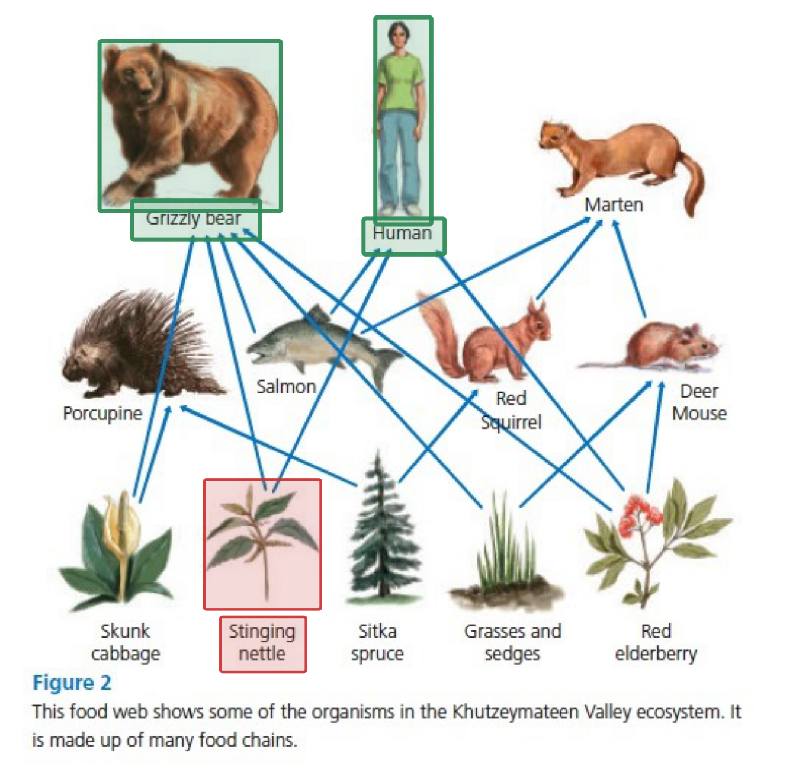
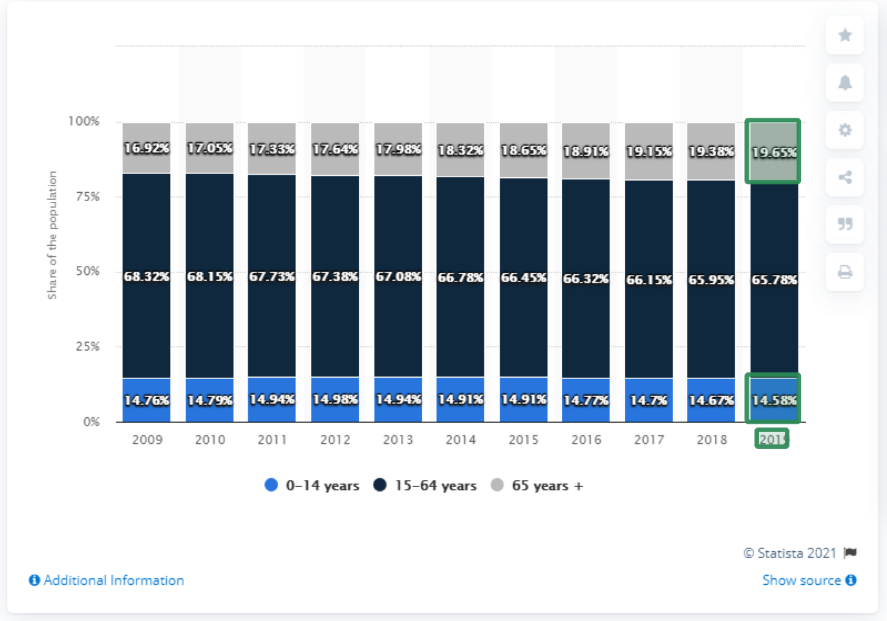
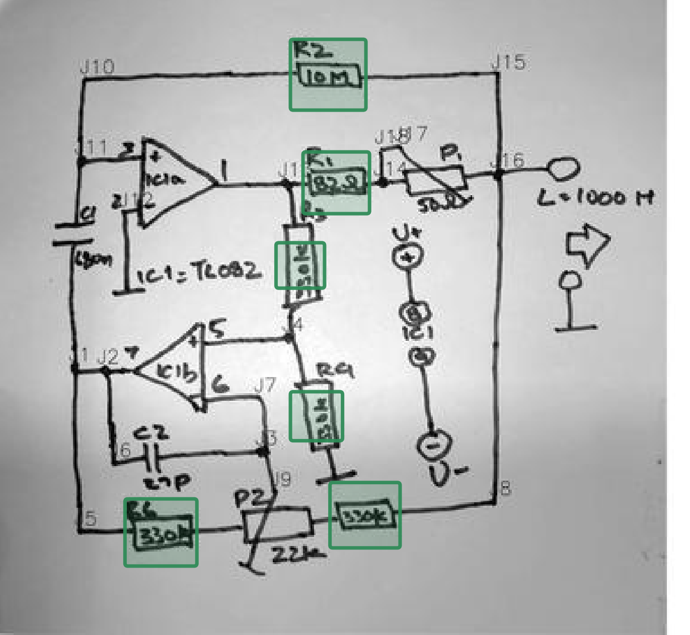
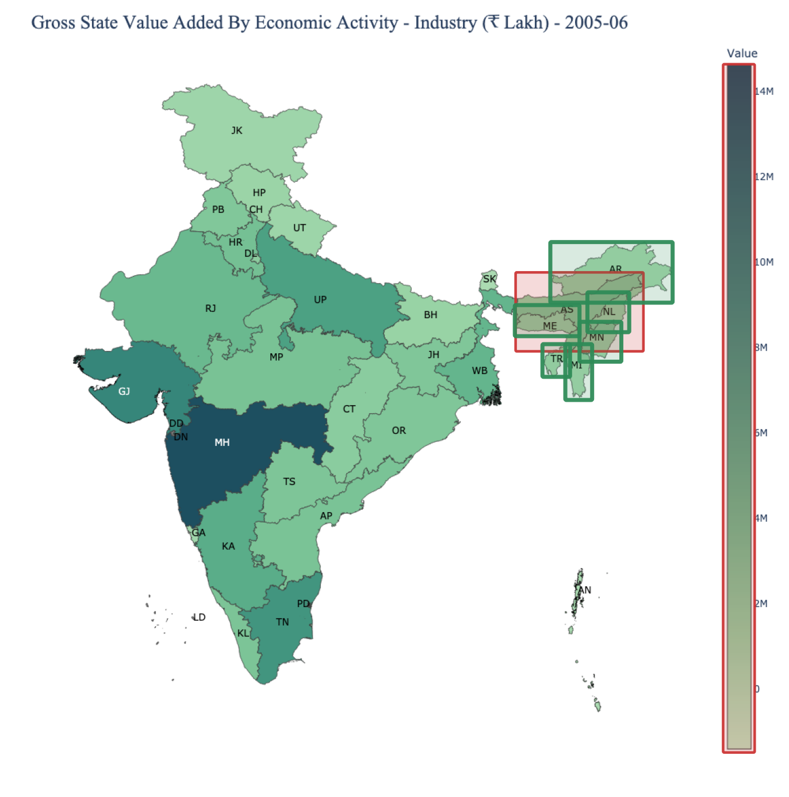
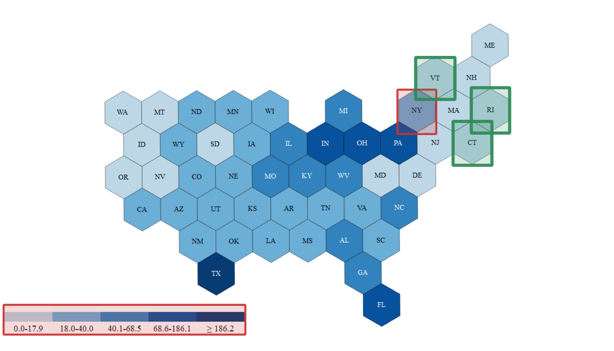

Ground-truth evidence from each of the six DRAGON domains
Answer region Supporting evidence

QuestionBased on the food web, which organisms compete over Stinging Nettle as a food source?
AnswerHuman and Grizzly Bear
To solve this problem, the model must first identify the region corresponding to the plant Stinging Nettle. The food-web diagram uses directional arrows to indicate feeding relationships. Arrows originating from the Stinging Nettle node point toward both Human and Grizzly Bear, indicating that both organisms consume this plant. Since they share the same food source, these organisms compete for that resource.

QuestionWhich year produced the largest difference between the 65+ age group and the 0-14 age group?
Answer2019
To answer this question, the model must locate the bar corresponding to the year 2019 and identify the values associated with two specific bar segments: the 65+ age group and the 0-14 age group. The chart shows that in 2019 the 65+ population share reaches approximately 19.65%, while the 0-14 share is approximately 14.58%. The difference between these two values is larger than in previous years, making 2019 the correct answer.

QuestionHow many resistors are present in the circuit?
Answer6
To answer this question, the model must identify all resistor symbols present in the circuit. Resistors are represented using standard electrical symbols and are labeled with identifiers such as R1, R2, and R3. By detecting and counting each resistor component highlighted in the diagram, the total number of resistors equals six.
QuestionWhat percentage of the world population rely on phone calls to keep in touch with family and friends during COVID-19?
Answer81%
To answer this question, the model must locate the section of the infographic describing communication methods during the pandemic. The diagram explicitly reports that 81% of people rely on phone calls to maintain contact with family and friends. The surrounding textual elements provide context linking the statistic to communication behavior during COVID-19.

QuestionList the states bordering Assam with values lower than the reference state.
AnswerArunachal Pradesh, Manipur, Meghalaya, Mizoram, Nagaland, Tripura
To solve this problem, the model must first identify the state of Assam in the map. It must then determine which surrounding states share a border with Assam and compare their corresponding values indicated by the color scale. Several neighboring states display lighter color intensities than Assam, indicating lower values.

QuestionIn the Northeast zone, which state(s) have the lowest attribute class compared with New York?
(a) VT (b) RI (c) NY (d) CT (e) None of the above
Answer(a) VT, (b) RI, (d) CT
To answer this question, the model must identify the states belonging to the Northeast zone and interpret the attribute classes encoded using color shading. By comparing the colors of the candidate states with the legend ranges, Vermont (VT), Rhode Island (RI), and Connecticut (CT) correspond to the lowest attribute class among the options.